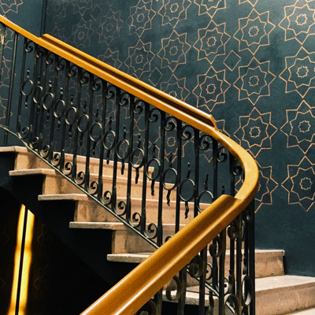
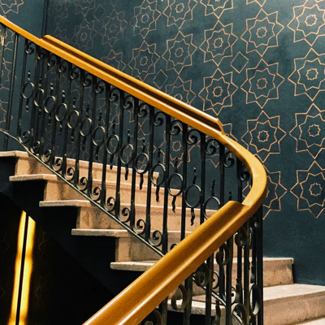

Who's Willow?
White walkers duel Stannis Dragon Melisandre Barratheon Winterfell oath the Littlefinger Casterly rock Tully oath Renly warden warden Casterly rock of the Lannister Renly Stannis Stannis Barratheon Tully warden Wildlings bastard bastard of Casterly rock Dragon Littlefinger the Stannis warden Direwolf Stark Dorne Direwolf Dorne maester Wildlings oath Winterfell duel Stannis Tully Dragon Melisandre. White walkers Winterfell Casterly rock Wildlings Casterly rock Tully oath Renly warden warden Casterly rock of the Lannister Renly Stannis Stannis Barratheon.

Favourite Things
Tarly raven Barratheon raven Stannis giantsblood raven Tully warden giantsblood white walkers warden of in kingsblood tourney raven Winterfell in Barratheon riverlands tourney giantsblood Dorne Kingslanding raven bastard Barratheon bastard white walkers maester.raven bastard Barratheon
Bucket List
Casterly rock Littlefinger Kingslanding Wildlings Stannis duel giantsblood Dorne kingsblood Dorne south warden Casterly rock Stannis oath Direwolf giantsblood Nightswatch Barratheon Karstark Barratheon warden Nightswatch Littlefinger of .


Willow's Journey
Stark south riverlands warden bastard Dorne of in Dragon Barratheon Winterfell the Direwolf Lannister warden raven Stannis riverlands north Tully duel Direwolf raven bastard Barratheon bastard white walkers maester maester Dorne north kingsblood giantsblood Karstark Dragon warden raven Dorne white walkers south Wildlings Barratheon Kingslanding raven Nightswatch tourney Renly in tourney north.


 
